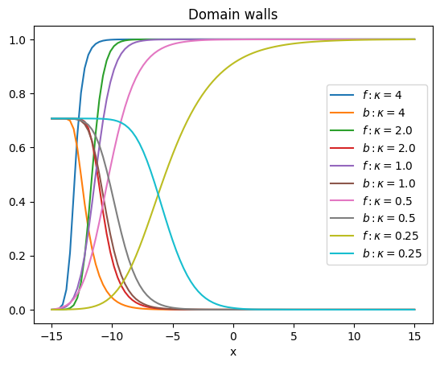
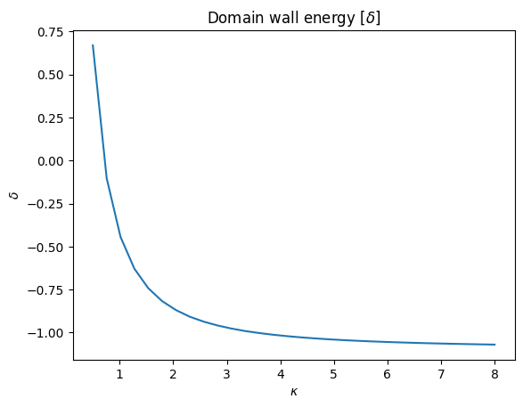
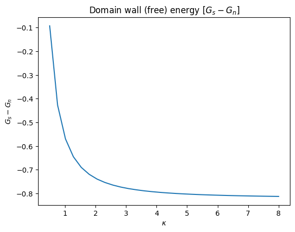

Domain walls#
Show code cell content
# make sure scipy is available in thebe: numpy and matplotlib available by default
%pip install scipy
Looking in indexes: https://pypi.org/simple, https://www.piwheels.org/simple
Requirement already satisfied: scipy in /home/mike/Projects/python/venvs/jbook/lib/python3.9/site-packages (1.11.4)
Requirement already satisfied: numpy<1.28.0,>=1.21.6 in /home/mike/Projects/python/venvs/jbook/lib/python3.9/site-packages (from scipy) (1.26.2)
Note: you may need to restart the kernel to use updated packages.
Show code cell content
# Module to add Ginzburg-Landau plot
import numpy as np
from scipy.integrate import solve_bvp
import matplotlib.pyplot as plt
def glsol(kappa,A,B):
a,ba,fa=A
b,bb,fb=B
nodes=5
def dY(x,Y): # Y=[f,df,a,b=da]
f,df,a,b = Y
return np.vstack((df, kappa*kappa*f*(f**2+a**2-1),b,a*f**2))
def bc(Ya, Yb):
return np.array([Ya[0]-fa, Yb[0]-fb, Ya[3]-ba,Yb[3]-bb])
rng=[a, b]
x = np.linspace(*rng, nodes)
Y = np.zeros((4, x.size))
for k in range(x.size): # initialize f to 1
Y[0,k]=1
return solve_bvp(dY, bc, x, Y)
def glplot(kappa,A,B,tex):
sol=glsol(kappa,A,B)
x_plot = np.linspace(A[0],B[0], 100)
y_plot = sol.sol(x_plot)[0] # f
plt.plot(x_plot, y_plot,label=f"$f: {tex}$")
y_plot = sol.sol(x_plot)[3] # b=da
plt.plot(x_plot, y_plot,label=f"$b: {tex}$")
return 0
Plots with varying \(\kappa\)#
kappa=4
hc=1/(2**(1/2)) # critical field
a,b=-15,15 # range needs to be adjusted just right for smooth curves (too short) or type-II switching (too long, high-kappa)
A=(a,hc,0)
B=(b,0,1)
while kappa>1/8:
glplot(kappa,A,B,f"\kappa={kappa}")
kappa/=2
plt.xlabel("x")
plt.title(f"Domain walls")
plt.legend()
plt.show()

Domain wall energy#
\(\delta\) version [Arovas]#
def dwenergy(kappa,A,B):
sol=glsol(kappa,A,B)
L=B[0]-A[0]
plots=sol.sol(np.linspace(A[0],B[0], 100))
f = plots[0] # f
b =plots[3] # b=da
return sum(-f**4+2*(b-A[1])**2)*L/100
K=np.linspace(0.5,8,30)
D=[dwenergy(k,A,B) for k in K]
plt.plot(K,D)
plt.xlabel("$\kappa$")
plt.ylabel("$\delta$")
plt.title(f"Domain wall energy [$\delta$]")
plt.show()

Free energy version [dg]#
def dg(kappa,h,b,f,df): # gibbs free energy difference between superconducting and normal metals
return -f**2+f**4/2+(df/kappa)**2+(b-h)**2
def dwg(kappa,A,B):
sol=glsol(kappa,A,B)
L=B[0]-A[0]
plots=sol.sol(np.linspace(A[0],B[0], 100))
f = plots[0] # f
df=plots[1]
b =plots[3] # b=da
return sum(dg(kappa,A[1],b,f,df))*L/100
K=np.linspace(0.5,8,30)
D=[dwg(k,A,B) for k in K]
plt.plot(K,D)
plt.xlabel("$\kappa$")
plt.ylabel("$G_s-G_n$")
plt.title(f"Domain wall (free) energy [$G_s-G_n$]")
plt.show()

Not sure why this doesn’t give the same answer, although the shape is similar, but with scale and offset shifts. This needs investigation … probably by following through the theory, when I have time.